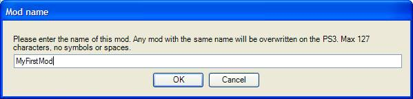
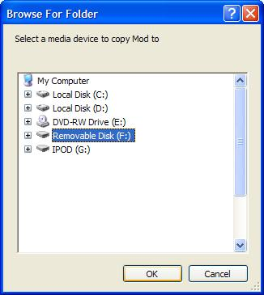

PlayStation 3 콘솔??Mod (모드) ?�작
문서 ?�약: PlayStation 3??모드 ?�작??관???�내?�니??
문서 변�??�역: ?�성 Josh Adams; ?��? 관�?Richard Nalezynski?.
?�치
- ?�도?�스??Unreal Tournament 3�??�치?�니??
- ?�곳?�서 최신?? UT3 ?�치�??�운로드 받아 ?�치?�십?�요: http://www.epicgames.com/download/UT3Patch2.exe
- ?�곳?�서 최신?? UT3?? PS3 모드 ?�구�??�운로드 받아 ?�치?�십?�요: http://udn.epicgames.com/Files/UT3/Mods/PS3ModTools2.1.exe (�? ???�구?��? ?�립?�으로서, ?�전 버전???�치가 ?�구?��? ?�습?�다.)
- ?�러분의 PC?�서 Unreal Tournament 3???�치 ?�치�??�택?�십?�요 (기본?� C:\Program Files\Unreal Tournament 3).
- ?�치 ?�치???�넣기�? ?�려�?관리자??권한???�요?��???모른?�는 것을 ?�아 ?�십?�요.
- PC???�결?????�는 ?�동??미디?��? 가지�??�도�??�십?�요. PS3?? USB ?�라?�브 (iPod ?�함!), USB ???�라?�브, SD 카드, 메모�??�틱, 그리�??�형 ?�래???�바?�스�??�용?????�습?�다.
개요
- PS3?�서??UT3??모드 지?��? PC???�셋??기초�??�고 ?�습?�다. PS3?�서 ?�행?�는 게임??모드 ?�구???�습?�다. 그러???�는 ?�람?�에�?그들???�하??것�? 무엇?�든 만들 ???�는, ?�마?�마???�유�?부?�합?�다 (?�당??범위 ?�에?? 결국 PS3??가??메모�??�이 ?�정???�의 메모리�? 가지�??�으므�?.
- ??문서?�서??무엇???????�는지, ?�떻�??�는지, 그리�?모드�??�떻�? PS3�???��?��????�???�명?�니??
- ?�반?�인 ?�이?�라?��? ?�음�?같습?�다:
- 콘텐츠�? 만들�?만들거나 ?�크립트 코드�??�다.
- Unreal Frontend (UFE) ?�구�??�용?�서 모드�?PS3 ?�으�??�쿡?�한??
- 지?�되???�동??미디???�바?�스�? PC???�는??
- UFE??모드�??�바?�스???�별 ?�치??복사?�다.
- ?�바?�스�? PS3�?가?��???모드�??�포?�한??
- PS3?�서 ?�생 �??�스?��? ?�다.
지?�되??것들
- ?�음 ?�?�의 모드?�이 지?�됩?�다. ?�한 ?�항???�?�서???�래?? ?��??�되지 ?�는 것들???�션??참고?�십?�요.
- Maps
- ??모드?��? UnrealEd�?만들?��?�??�?�됩?�다.
- ?�것?��? Epic??공급?�는 게임 ?�???�는 ?�러�??�신??게임 ?�?�을 ?�해 ?�로 만들?�진 맵들?�니??
- Mutators
- ??모드?��? UnrealScript�??�로그램??것들?�니??
- ?�것?��? 매치가 ?�루?��????�안???�택?�으�??�성?�됩?�다. 모든 무기?�을 ?�체하??것에?��????�레?�어???�직임???�향??주도�?기묘??방법?�로 중력??변경하?�데 ?�르기까지 ?�양???�을 ?????�습?�다.
- ?�것?��? ?�라?�언??PS3??모드�??�치???�요 ?�이, ?�로???�?�의 게임???�행?�는 ?�버로�????�동?�로 ?�운로드 받을 ???�습?�다. ?�는 ?��? ?�라?�언?�로???�레?�하�??�한 것이?�는 ?�을 ?�의?�십?�요; Mutator�??�버 (?�는 ?�프?�인)?�서 ?�행?�려�?보통??방법?�로 모드�??�치?�야 ?�니?? ?�동 ?�운로드??모드?��? ?�직 ?�시 캐시?�만 ?�?�됩?�다.
- Game types
- UnrealScript�??�로그램??모드?�입?�다.
- ?�는 기존??맵을 ?�용?�는 ?�로??게임 규칙???�트?�니??(게임 ?�?�에 ?�??것�? Total Conversions 참고)
- ?�것?��? ?�의 Mutator처럼 ?�동 ?�운로드 받을 ???�습?�다.
- Custom Characters
- UT3?�서 캐릭?? ?�나?�나???�순??맞춤 캐릭???�스?�을 구성?�는 ?�소?�니??
- Total Conversions
- Total Conversion, ?�는 TC?? ?�반?�으�?Main 메뉴�??�함?�서 게임???�라??모든 콘텐츠�? ?�전???�특??콘텐츠로 ?�체하??것을 ?��??�니??
- PS3?�서, Main 메뉴???�체될 ???�는 것입?�다. 그렇지�??�는 TC??메인 메뉴???�른 ?�벨???�재?�는???�용?????�습?�다. �??�음?�는 TC??�??�을 ?�재?�기 ?�해 분기?????�습?�다.
- ?�들?� 보통 ??게임 ?�?? ??모델 그리�????�벨?�의 조합?�니??
- 그밖?? 변경들???�용?��? 모르지�? ?�상???�?��? ?�스?�한 것들?�고 계획?�던 것들?�니??
지?�되지 ?�는 것들
믈론, PS3???�정??메모�??�으�?�????�러분이 ?????�는 ?�에???�계가 ?�습?�다.
- Mutators?� Game Types?? UnrealScript??코드로만 ?�어 ?�어???�니?? ?�것?� UT3 무기?�을 모두 ?�러분이 ?�포?�한 ?�주 ?�소 모델�?만드?? Mutator�?가�????�다??것을 ?�합?�다.
- ?�는 출하??맵으�??�업?�야 ?�기 ?�문?�며, ?�무 많�? 콘텐츠�? 추�??�면 PS3??메모리�? ?�진?�어 버립?�다.
- ?�향???�포?�는 지?�되지 ?�습?�다. UT3???�허 ?�록 버전 ATRAC3�??�용?�며, .wav ?�일??게임?�서 ?�구?�는 ?�맷?�로 변?�하?�데 ?�요???�구�?출시?????�기 ?�문?�니??
- ?�?��? ?�으�??�향 변?�을 ?�한 ?�스?�을 가지�??�수 ?�을지???�실?��? ?�습?�다.
- ?�?�는 모드 개발?�들??직면?�는 ?�계�??�해?�며, ?�후??버전?�서???��? 개선?�도�?가?�한 ??최선???�할 것입?�다.
PC?�서??모드 ?�성
- 먼�? Unreal Engine 3???�셋???�숙?��??�록 ?�십?�요. Unreal Developer Network (UDN - http://udn.epicgames.com) ?�는 ?�구?�에 ?�??많�? ?�보가 ?�록?�어 ?�습?�다.
- ??문서?�서???�구???�용방법?�라?��? ?�크립트 코드�??�는 것에 ?�?�서??취급?��? ?�습?�다. ?�세???�보?? UDN??참고??주시�?바랍?�다.
- PS3?�서??콘텐�??�성???�에???�급???�한???�라) PC?�서?� 마찬가지?�니??
- ?�선, 모드�?PC 버전?�서 ?�스?�하??것이 좋습?�다. 반복???�는 ?�간?? PC?�서 ??빠르�??�문?�니?? PC 모드?� PS3 모드?�의 .ini ?�일 ?�성?� ?�로 ?�르�? ?��? ??처리???�요가 ?�다??것을 ?�의?�십?�요.
- 준비�? ???�면 모드�? PC?�서 PS3�?가???�십?�요.
- ?�래???�모???�일???�치?��? 참고?�여 ?�일???�어?????�치???�???�정???�보�??�인?�십?�요. 그래??쿠킹 ?�구가 ?�당 ?�키지�?찾아?????�습?�다.
- UnrealFrontend (UFE) ?�구�??�행?�야 ??것입?�다. ?�는Unreal Tournament 3 ?�치 경로?? Binaries ?�렉?�리???�어 ?�습?�다.
- ?�기??중요??것�? Cooking ??��?�다:

- ???�구???�?��? ?�내?�서 게임??개발?????�용??것과 같�? 것이므�? ?�떤 ?�션?��? 모드 ?�성???�요?��? ?�을 ?�도 ?�습?�다.
쿠킹
- ?�이?��? 준비하?�면 Cook 버튼???�릭?�십?�요. 모드???�름??묻는 ?�?�상?��? ?��???것입?�다. 모드???�름?� 매우 중요?�며, �?모드가 고유???�름??가?�야 ?�니?? 같�? 모드?�서 반복???�행??경우?�는 같�? ?�름???�용?�십?�요.

- PS3??모드�??�포?�할 ?? 같�? ?�름??기존 모드가 ?�으�??��? 겹쳐?�기 ?�니??(?�전 것을 ??��?�니??.
- �??�음 cooker ?�구�??�행?�여 ?�이?��? PS3??맞는 ?�맷?�로 변?�합?�다. 변???�도??모드???�?�과 �?콘텐�?(?��? ?�면, Map?��? Mutator?��?) ???�라 빨라지거나 ?�려집니??.
- 모드�?처음?�로 쿠킹???�는 ?�성?? .ini ?�일??검?�하?�는 권유�?받게 ?�니??(?�래?? ??ini ?�일???�션??참고?�십?�요).

- 마�?막으�??�동??미디?�의 ?�치�?묻습?�다:

- ?�당 미디?�에 ?�당?�는 ?�라?�브�??�택?�십?�요. ?�는 ??�� ?�당 ?�바?�스??루트 ?�렉?�리???��?�? ?�바?�스???�위 ?�렉?�리�??�람???�요???�습?�다. 복사가 ?�나�?(?�재??복사가 ?�났?�을 ?��??�는 ?�절??기능???�습?�다 ???�틸리티�??�펴???�시 반응???��??�는지 보십?�요) , ?�동??미디?��? 빼내?? PS3�?가?�오�??�니??
- PS3 ?�일 ?�포?�의 ?�한 ?�문?? ?�동??미디?�에????번에 ?�나??모드�?가�????�다???�을 ?�의?�십?�요. UFE가 미디?�에 모드�?복사???? ?�는 기존??모드�?겹쳐?�기 ?�니??
모드 ?�름 ?�보
- 모드???�름?� ?�?�히 중요?�니?? ?�떤 ?�일?��? ?�별??모드???�름???�라 ?�름??붙여지�? ?�단 모드???�름???�택???�에???��? 바�? ???�게 ?�니??
- ?�는 ??(별도???�렉?�리?�서) ??개의 모드�?취해 ?�것?�을 ?�나�?결합?????�다??것을 ?��??�니?? 그렇지�? ?�나?? Mutator ?�크립트 ?�키지?� ?�러개의 Map??같�? 모드�?쿠킹?????�습?�다 ! ?�렇�??�려�? UFE?�서 ?�들 가?�데 ?�나�?모드 ?�?�으로서 ?�택???�음, .ini ?�일???�동?�로 ?�집?�여 ?�른 ?�보?�을 ?�함?�도�??�면 ?�니??(?�래???�Ini ?�일???�션 참고).
Ini ?�일
- 게임?� .ini ?�일???�용?�서 모드�?메뉴?� 게임?�로 ?�합?�니?? ?�는 ?�말�?중요??과정?�니??
- UFE?? .ini ?�일?�을 ?�성?�기 ?�해 ?�간??보기?�들??복사?�니?? ?�성?? .ini ?�일?��?, ?�히 코드 모드 ?�???��?, 100% ?�벽?��? ?�을 가?�성???�다??것을 명심?�십?�요. ?�러가지 .ini ?�?�의 ?�용???�해???�면 ?��??? ??것입?�다.
- ?�음?� ?�양??모드??.ini ?�?�을 거기??무엇???�함?�어 ?�는지, 변경할 ???�는 것�? ?�떤 것들?��????�???�명??곁들???�열??목록?�니??(?�명 문구?? _?�탤�?��_�??�시?�습?�다).
Map 모드 (PS3-UTGame.ini):
[DM-MyMap UTUIDataProvider_MapInfo] |
| �?줄에??반드??맵의 ?�름�? ?�어?? UTUIDataProvider_MapInfo가 괄호 ?�에 ?�어 ?�어???�니??/em> |
MapName=DM-MyMap |
| �??�음?� ?�스?�에 ?�는 �??�키지???�름?�니??(.xxx ?�장???�이) |
FriendlyName=MyMap |
| friendly name?� 메뉴???��??�는 ?�름?�니??/em> |
PreviewImageMarkup=<Images:UI_FrontEnd_Art.GameTypes.DeathMatch> |
| ?�러�??�신???��?지�?Main 메뉴??�?미리보기�??�해 ?�재?????�습?�다. ?�기???�러분의 ?�스처�? 지?�할 ???�습?�다. ?�스처의 추�????�?�서???�그밖의 Ini 기능?��??�션??참고?�십?�요. |
Description=This is my first map! |
| 맵에 ?�???�명 부분입?�다. 맵에 ?�????많�? ?�보가 메뉴?�서 보이?�록 ?�니?? |
Mutator 모드 (PS3-UTGame.ini):
[MyMutator UTUIDataProvider_Mutator] |
| Map�?마찬가지�? Mutator???�름�??�어?? UTUIDataProvider_Mutator가 ?�어???�니?? |
ClassName=MyMutator.MyMutator |
| ?�러분이 ?�크립트 코드???? Mutator ?�래?�의 ?�름?�니????PackageName.ClassName. Packagename과Classname??모드???�름???�용?�도�?기본값이 ?�정?�어 ?�으므�? ?�는 ?�러분이 붙인 ?�래?�의 ?�름???�라 ?�데?�트???�요가 ?�을 ???�습?�다. |
FriendlyName=MyMutator |
| Mutator 목록???��??�는 Mutator???�름?�니?? |
Description=My mutator rocks! |
| ?�기?�다 Mutator???�???�세???�보�??�하?��?�??�공?????�습?�다. |
[LoadForAllGameTypes]
Package=MyMutator |
| ?�기?? Mutator가 게임???�재?�도�??�는, ?�주 중요???�션?�니?? 기본?�로, Package??모드???�름?�로 ?�정?�어 ?�으므�?바�? ?�요가 ?�을 것입?�다. |
Gametype 모드 (PS3-UTGame.ini):
[Engine.PackagesToFullyLoadForDLC]
GameType_PreLoadClass=MyGame.MyGame |
| ?�크립트 ?�키지???�름�? gametype ?�래?�의 ?�름?? PackageName.GameTypeName ?�태�??�력?�십?�요. ?�는 게임?�게 ?�의 gametype ???�생?????�래???�키지�??�재?�라�?지?�하??것입?�다. Packagename과Classname??모드???�름???�용?�도�?기본값이 ?�정?�어 ?�으므�? ?�는 ?�러분이 붙인 ?�래?�의 ?�름???�라 ?�데?�트???�요가 ?�을 것입?�다. |
Package=MyGame |
| Packagename??모드???�름???�용?�도�?기본값이 ?�정?�어 ?�습?�다. |
[MyGame UTUIDataProvider_GameModeInfo]
GameMode=MyGame.MyGame |
| ?�의 GameType_PreLoadClass로�???값을 복사?�니?? |
FriendlyName=MyGame |
| 게임?�서 Game Types 메뉴?? 게재?�어 ?�는 ?�름?�니??/em> |
Description=This is my first game type. |
| game type???�세???�명?�니??/em> |
Prefixes=DM |
| 기존??�??�는 ?�러�?고유??맵에 ?�?? game type??처리?�는 ?�두?��? ?�정?�니??(?��? ?�어, Deathmatch map???�용?�려�?DM). |
PreviewImageMarkup=<Images:UI_FrontEnd_Art.GameTypes.TeamDeathmatch> |
| ?�러�??�신???��?지�? Main 메뉴??�?미리보기�??�해 ?�재?????�습?�다. ?�기???�러분의 ?�스처�? 지?�할 ???�습?�다. ?�스처의 추�????�?�서???�그밖의 Ini 기능?��??�션??참고?�십?�요. |
Character piece 모드 (UTCustomChar.ini):
[CustomParts]
CustomParts=(Part=PART_Helmet,ObjectName="MyChars.MyHelmet",PartID="MYCHARSA",FamilyID="IRNM") |
| ?�래?�Part ?�름?�을 참고?�십?�요 |
- Part?�는 ?�음 �??�나�??�용?�여 그것??몸의 ?�떤 부분인지 ?�명?�십?�요:
- PART_Helmet
- PART_Facemask
- PART_Goggles
- PART_Torso
- PART_ShoPad
- PART_Arms
- PART_Thighs
- PART_Boots
- ObjectName?�는 ?�러분이 만든 메쉬???�키지 �?객체???�름???�용?�십?�요.
- PartID?�는 ?�특???�름???�용?�십?�요.
- FamilyID?�는 ?�음�??�나�??�용?�여 메뉴???�느 몸체 ?�?�에 �? 부분이 ?�어?�는지 ?�택?�십?�요.
- IRNF ??IronGuard ?�자
- IRNM ??IronGuard ?�자
- KRAM ??Krall ?�자
- LIAM ??Liandri ?�자
- NECF ??Necris ?�자
- NECM ??Necris ?�자
- TWIF ??TwinSouls ?�자
- TWIM ??TwinSouls ?�자
- �? ??머리?? PS3?�서 모드?�할 ???�는, ?�전???�로??캐릭?��? 기반?�로 ?�고 ?�기 ?�문?? PS3?�서 ?�용?��? ?�습?�다. ?�에 ?�??최선???�결책�? ?�멧??만들??기존??머리�??�전????��버리??것입?�다.
Total conversion 모드 (PS3-UTGame.ini)
- Total Conversion?� Game Type�? Map 모드??결합?�니?? ?�의 ?�정??변경하??방법???�?�서???�의 ?�명??참고?�십?�요.
- �? Total Conversion 모드?�서?? 게임 ?�?�을 ?�함?�고 ?�는 ?�크립트 코드 ?�키지�?지?�하지 말고 맵을 지?�하??��?? 맵이 ?�계???�성???�는 게임 ?�??배열 ?�의 gametype ??가리키???? ?�는 ?�크립트 코드�?�??�키지�?쿠킹?�여 ?�확?�게 ?�용?�게 ?�니??
기�? ?�보
- ?�나?? .ini ?�일???�러개의 맵을 ?�는 ?? .ini ?�일???�력??추�??????�습?�다. ?�성?? .ini ?�일??�??��??�는 ?�간??주석???�습?�다.
그밖?? Ini 기능??(기슬?�인 명세)
- ?�직 .ini ?�일???�정???�션만이 지?�됩?�다. 모드�??�키지???? UFE??�??�의 .ini ?�일?�을 검�? 불법 ?�션???�함?�어 ?��? ?��?지 ?�인?�니??
- 그러???�요??경우?�는 .ini ?�일???�러분의 모드???�라 ?�에???�명??�??�상?�로 변경할 ???�습?�다. ?�아?�어????중요???�션?� [Engine.PackagesToFullyLoadForDLC]?�니?? DLC (DownLoadable Content) ?� Mods ?�는 ???�어???�히 ?�로 같�? ?��?�??�용?�니??(?�일??차이?��? ?�것???�디?�서 ?�수?�는지 ???�용?�에 ?�해 ?�포?�된 것인지Playstation Store?�서 ?�수?�는지-?�니??.
- ???�션?� ?�래?� 같�? ?�맷?�로 ?�어 ?�습?�다:
[Engine.PackagesToFullyLoadForDLC]
MapName=UTFrontend
Package=MyModContent1
Package=MyModContent2
GameType_PreLoadClass=MyGame.MyGame
Package=MyGameContent1
GameType_PostLoadClass=MyGame.MyGame
Package=MyGameContent2
- ?�는 ?�진?�게 지?�된 ?�도???�키지�??�전???�재?�라�?지?�하??것입?�다. 콘솔?� ?�키지로�????�나??객체만을 ?�재???�는 ?�으�? ?�직 ?�키지 ?�체만을 ?�재?????�기 ?�문?�니??
- ?��?모드가 쿠킹???�는 ?�요??것들??모두 ?�당 ?�키지 ?�에 ?�어집니?? 그러?? DynamicLoadObject???��? 비슷??것을 ?�출?�는 ?�크립트 코드가 ?�을 경우?�는, �?객체??�??�키지 ?�으�?쿡되지 ?�습?�다. ?�라?? DynamicLoadObject�??�출?�기 ?�에 ?�키지 ?�체�??�재???�요가 ?�습?�다.
- ?�의 ?�션?� ?�정map?�나 game type???�라 ?�키지??로딩??콘트롤할 ???�습?�다.
- ???�로, game type 모드�??�재?�기 ?�해?�는, 게임?� game type 객체를game type?�로???�용?�기 ?�에 game type???�함?�는 ?�키지 ?�체�??�재?�야 ?�니??
- ?�의 매우 ?��?로운 ?�도 ?�나?? MapName=UTFrontend?�니?? ?�러분이 맵에 ?�이콘이??미리보기??그림??가지�??�다�? ?�당 ?�스�?객체???�름?? .ini ?�일?? PreviewImage 줄에 ?�어???�니?? ?��?�? �??�에 먼�? ?�키지�??�전???�재?�야 ?�니?? .ini ?�서 MapName=UTFrontend???�용?�으로써, Main 메뉴(UTFrontend)가 ?�재?�는 ?�안???�스처�? ?�함?�고 ?�는 ?�키지???�재가 보장?�니?? 그러�?�??�키지�?찾을 ???�습?�다.
- ?�스처�? UI LOD 그룹???�고, UFE 쿠커�??�용?�서 ?�스처�? ?�함?�고 ?�는 ?�키지�?쿡할 ???�습?�다 (Maps 줄에??.
모드 ?�일???�치 �?기�? ?��? ?�항??
- ?�음?�서 ?? ?�My Documents\My Games?��? 가리킵?�다.
- ?�크립트 코드:
- ?�크립트 코드�?컴파?�할 경우, ?�크립트 ?�일???�래 ?�렉?�리???�으??��??
<UserDirectory>\UTGame\Src\<ScriptPackageName>\Classes
-
- ?�진???�키지�??�록?�려�??�음 ?�일???�집?�십?�요:
<UserDirectory>\UTGame\Config\UTEditor.ini
-
- [ModPackages] ?�션??만들??(?��? 존재?��? ?�는 경우) ?�음??추�??�십?�요:
ModPackages=<ScriptPackageName>
-
- 만들?��???�??�크립트 ?�키지마다 ??줄의 ModPackages 가 ?�요?�니??
- 컴파?�하?�면 UFE�??�용 (Script ??��?? Compile Scripts 버튼, ?�니�??�바?? Make)?�거?? Binaries ?�렉?�리로�????�음 명령?��? ?�행?�십?�요:
- Maps:
- ?�디?�에??맵을 ?�?�하??경우?�는 ?�음 ?�렉?�리???�?�되?�야 ?�니??
<UserDirectory>\UTGame\Unpublished\CookedPC\CustomMaps
- Custom Character 부�?
- ?�디?�에???�키지�??�?�하??경우?�는 ?�음 ?�렉?�리???�?�되?�야 ?�니??
<UserDirectory>\UTGame\Unpublished\CookedPC\CustomChars
-
- Custom Character ?�키지??반드???�운로드 ?????�는 것으�??�시?�야 ?�니?? ?��? ?�해?�는 게임???�치???�렉?�리?�Binaries ?�렉?�리로�????�음 명령?��? ?�행?�십?�요:
UT3 setpackageflags ..\UTGame\CookedPC\CustomChars\<charmodname>.upk serversideonly=TRUE
-
- ?�키지�?만들 ?�마????번만 ?�것???�행?�면 ?�니??
?�른 ?�람?�과 모드 공유?�기
- 모드??준비�? ?�나�? ?��? ?�른 ?�람?�과 공유?�여 ?�라?�으�?모드�??�레?�할 ???�습?�다.
- ?�버???�속?�어 ?�는 ?�라?�언?�는 코드 ?�용 모드??코드�??�라?�언?�의 PS3 ?�드 ?�라?�브???�운받을 ???�을 것입?�다. ?�는 모드�??�전?�게 ?�치?��???못합?�다. ?�라??�??�라?�언???�신??�?모드�??�용???�는 ?��?�? ?�라?�언?��? 코드�??�운로드 받�? ?�고 ?�버???�속???�는 ?�습?�다.
- 콘텐�?모드???�?�서?? ?�라?�언?�는 모드�??�행?�는 ?�버???�류?????�기 ?�에 그들??PS3??모드�??�치?�야 ?�니??(UT3??그처?????�일??맵으로서 ?�운로드?�는 것을 지?�하지 ?�습?�다).
- ?�러분의 모드�??�른 ?�람?�과 공유?�려�??�동??미디?�에?�PS3 ?�렉?�리�?PC???�드 ?�라?�브??복사???�습?�다. 그리고나???��? ?�른 ?�람?�이 ?�운로드?????�는 ?�치???�로?�하기만 ?�면 ?�니??
- 그러�??�른 ?�람?��? ???�카?�브�??�운로드 받아 ?�동??미디?�에???�축?????�음, ?��? PS3???�상?�인 방법?�로 ?�치?�면 ?�니??